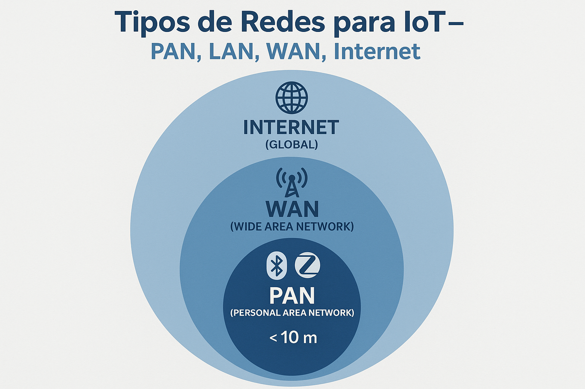

⏱️ Agenda de 90 Minutos
- 0-15 min: Apertura, contexto y objetivos de la sesión.
- 15-50 min: Desarrollo teórico guiado y análisis de casos.
- 50-80 min: Actividad práctica / discusión aplicada al proyecto integrador.
- 80-90 min: Cierre, conexión con evaluación y tareas.
Objetivos de la Clase
Competencias a Desarrollar
Al finalizar esta clase, podrá:
- Clasificar redes IoT por alcance (PAN, LAN, WAN, Internet)
- Comparar tecnologías (BLE, Zigbee, WiFi, LoRaWAN, NB-IoT, Sigfox, 4G/5G)
- Evaluar protocolos de aplicación (MQTT, CoAP, HTTP, AMQP, LwM2M)
- Aplicar una matriz de decisión para casos reales
Estructura de la Clase
| Bloque | Tema | Duración |
|---|---|---|
| 1️⃣ | Clasificación de redes por alcance | 20 min |
| 2️⃣ | Tecnologías PAN (BLE, Zigbee) | 25 min |
| 3️⃣ | WiFi y WAN (LoRaWAN, NB-IoT) | 35 min |
| 4️⃣ | Protocolos y matriz de decisión | 30 min |
| 5️⃣ | Práctica/Laboratorio y Ejercicios | 10 min |
Total: 2 horas | 💡 Pregunta clave: ¿Qué tecnología de red es más adecuada para mi caso de uso?
🏗️ Avance del Proyecto Integrador
Proyecto: Sistema de Monitoreo Ambiental IoT
Qué construimos esta semana: Entendemos las opciones de conectividad para nuestro proyecto. El sistema IoT de monitoreo ambiental necesita enviar datos desde los sensores (DHT22, LDR) hasta una plataforma en la nube para su visualización.
Evidencia esperada: Matriz de decisión justificando qué tecnología de red usaremos (WiFi vs LoRaWAN vs otras) según requisitos de alcance, consumo y ubicación del despliegue.
Conexión con el proyecto final: Esta semana definimos la "columna vertebral" de comunicación del proyecto. Sin una elección correcta de tecnología de red, el sistema no podrá transmitir datos eficientemente.
📝 Conexión con Evaluación
📌 Esta semana tenemos evaluación:
- Evaluación: E1 - Comprensión conceptual + Análisis de contexto IoT
- Peso: 15% (10% quiz en clase + 5% ensayo)
- Fecha: Lunes 23 de Febrero 2026 (hoy)
- Formato:
- Quiz (30 min, 10%): Preguntas sobre Clases 1-3, conceptos IoT (pilares, DIKW), casos Nutresa/EPM
- Ensayo (5%): Entregar DOMINGO 22/02 antes 11:59 PM. Analizar un caso IoT real aplicando los 4 pilares.
- Preparación: Repasar Clases 1-3, estudiar casos Nutresa/EPM, traer kit de sensores para LAB 2
🔗 Conexión: El ensayo de E1 les pedirá analizar un caso IoT real usando los conceptos aprendidos (pilares, DIKW, arquitectura). Esto prepara su pensamiento para diseñar su propio proyecto integrador.
Contexto y motivación
En IoT, la red es el puente entre sensores, actuadores y la nube. Elegir una tecnología incorrecta puede duplicar costos, agotar baterías o dejar puntos ciegos. La decisión se centra en cuatro variables: alcance, consumo, ancho de banda y densidad de dispositivos.

Términos Clave de Redes IoT
| Término | Definición | Contexto IoT |
|---|---|---|
| IEEE 802.15.4 | Estándar para redes de área personal de baja tasa (WPAN) | Base física de Zigbee, Thread, MiWi |
| 3GPP | 3rd Generation Partnership Project: Organismo que estandariza redes celulares | Define NB-IoT, LTE-M, 5G IoT |
| PoE | Power over Ethernet: Transmite datos y energía por cable Ethernet | Alimenta cámaras IP y Access Points sin enchufe adicional |
| AGV | Automated Guided Vehicle: Vehículo autoguiado industrial | Robots móviles en fábricas que necesitan conectividad 5G |
| QoS | Quality of Service: Garantía de calidad en redes | MQTT ofrece 3 niveles de QoS para entrega de mensajes |
| V2X | Vehicle-to-Everything: Comunicación vehicular universal | V2V, V2I, V2P, V2N combinados para transporte autónomo |
| Pub/Sub | Publish/Subscribe: Patrón de mensajería desacoplado | Sensores publican, múltiples subscriptores reciben sin conexión directa |
| Latencia | Tiempo entre envío y recepción de datos | Crítico en aplicaciones de tiempo real (alertas, control) |
| Throughput | Cantidad de datos transmitidos por unidad de tiempo | Determina si una red puede manejar video, solo sensores, etc. |
| Mesh | Topología de red multipunto a multipunto con enrutamiento | Zigbee usa mesh para extender cobertura saltando entre nodos |
| M2M | Machine-to-Machine: Comunicación directa entre dispositivos | Origen de IoT, ahora evolucionado a arquitecturas cloud-centric |
| UDP | User Datagram Protocol: Protocolo de transporte sin conexión | Usado en CoAP por ser ligero y rápido, sin garantía de entrega |
| Stateless | Sin estado: Cada petición es independiente de las anteriores | HTTP es stateless, facilita escalabilidad pero requiere re-autenticación |
| OMA | Open Mobile Alliance: Consorcio de estándares móviles | Define LwM2M para gestión de dispositivos IoT |
- bps = bits por segundo (unidad básica)
- Kbps = kilobits por segundo (1,000 bps)
- Mbps = megabits por segundo (1,000,000 bps)
- Gbps = gigabits por segundo (1,000,000,000 bps)
- Nota: 1 byte = 8 bits. Velocidades en redes siempre se miden en bits, no bytes.
Clasificación de redes por alcance
| Tipo | Alcance | Velocidad | Consumo | Tecnologías |
|---|---|---|---|---|
| PAN | < 10 m | 1-100 Mbps | Bajo-Medio | Bluetooth, NFC, Zigbee, Infrared |
| LAN | < 1 km | 100 Mbps-10 Gbps | Alto | WiFi, Ethernet, Powerline |
| WAN | > 1 km | 10 Kbps-100 Mbps | Bajo | LoRaWAN, NB-IoT, Sigfox, 4G/5G |
| Internet | Global | Variable | Variable | TCP/IP, Satélite |
📺 Video recomendado: "25 Topología de Red en Árbol y Malla" - Introducción a la Informática (7:45 min)
Tecnologías PAN detalladas
Bluetooth (Clásico y BLE)
| Parámetro | Bluetooth Clásico | Bluetooth Low Energy (BLE) |
|---|---|---|
| Velocidad | 1-3 Mbps | 1 Mbps |
| Consumo | Alto | Muy bajo |
| Alcance | 10-100 m | 10-50 m |
| Uso IoT | Audio, streaming | Sensores, wearables, beacons |
Zigbee
| Parámetro | Valor |
|---|---|
| Estándar | IEEE 802.15.4 |
| Frecuencia | 2.4 GHz (global) |
| Velocidad | 250 Kbps |
| Topología | Mesh |
| Nodos por red | 65,000+ |
NFC
| Parámetro | Valor |
|---|---|
| Alcance | < 10 cm |
| Frecuencia | 13.56 MHz |
| Velocidad | 106-848 Kbps |
| Modos | Lectura/Escritura, Peer-to-Peer, Card Emulation |
WiFi para IoT
| Estándar | Nombre | Velocidad | Rango | Frecuencia | Uso IoT |
|---|---|---|---|---|---|
| 802.11n | WiFi 4 | 150-600 Mbps | 70 m | 2.4/5 GHz | Cámaras IP |
| 802.11ac | WiFi 5 | 433-6933 Mbps | 35 m | 5 GHz | Video HD |
| 802.11ax | WiFi 6 | 9.6 Gbps | 30 m | 2.4/5/6 GHz | Alta densidad |
| 802.11ah | WiFi HaLow | 150 Kbps | 1 km | 900 MHz | IoT rural |
| 802.11be | WiFi 7 | 30 Gbps | 20 m | 2.4/5/6 GHz | Futuro |
Desventajas: consumo alto, congestión en redes densas, poca autonomía en baterías.
Tecnologías WAN IoT
LoRaWAN
| Parámetro | Valor |
|---|---|
| Frecuencia | 868 MHz (EU), 915 MHz (US) |
| Velocidad | 0.3-50 Kbps |
| Alcance | 2-15 km (rural), 2-5 km (urbano) |
| Consumo | Muy bajo (10+ años) |
NB-IoT
| Parámetro | Valor |
|---|---|
| Estándar | 3GPP Release 13 |
| Velocidad | 20-250 Kbps |
| Latencia | 1.6-10 segundos |
| Movilidad | Limitada |
Sigfox
| Parámetro | Valor |
|---|---|
| Velocidad | 100 bps (down), 600 bps (up) |
| Mensajes/día | 140 (up), 4 (down) |
| Alcance | 10-50 km rural |
4G LTE-M / 5G IoT
| Tecnología | Velocidad | Latencia | Consumo | Casos |
|---|---|---|---|---|
| 4G LTE-M | 1 Mbps | 10-100 ms | Medio | Video, tracking |
| 5G IoT | 10+ Mbps | 1-10 ms | Medio-Alto | V2X, crítica |
Protocolos de aplicación IoT
| Protocolo | Uso | Características |
|---|---|---|
| MQTT | Messaging | Pub/Sub, ligero, QoS |
| HTTP/REST | Web | Stateless, on-demand |
| CoAP | IoT | UDP, REST-like, bajo consumo |
| AMQP | Enterprise | Mensajería confiable |
| LwM2M | M2M | Gestión de dispositivos (OMA) |
| WebSocket | Tiempo real | Bidireccional |
Matriz comparativa rápida
| Tecnología | Velocidad | Alcance | Consumo | Costo nodo | Mensajes/día |
|---|---|---|---|---|---|
| BLE | 1 Mbps | 50 m | Bajo | $2-5 | Ilimitado |
| Zigbee | 250 Kbps | 100 m | Bajo | $3-8 | Ilimitado |
| WiFi | 100 Mbps+ | 50 m | Alto | $5-15 | Ilimitado |
| LoRaWAN | 50 Kbps | 15 km | Muy bajo | $5-10 | Ilimitado |
| NB-IoT | 250 Kbps | 10+ km | Muy bajo | $10-20 | Ilimitado |
| Sigfox | 600 bps | 50 km | Muy bajo | $5-10 | 140 |
| 4G LTE-M | 1 Mbps | 10+ km | Medio | $20-50 | Ilimitado |
Casos de uso recomendados
Smart Home (Piso/Casa)
Requisitos: alcance 10-50 m, 50-200 dispositivos, bajo consumo, interoperabilidad alta.
- Zigbee 3.0 para sensores/actuadores.
- WiFi para cámaras y streaming.
- BLE para cerraduras y wearables.
WiFi Router (Internet) <--> Smart Hub (Zigbee) <--> Sensores (50+)Smart Building (Oficina/Edificio)
Requisitos: 500-2000 dispositivos, alta fiabilidad y escalabilidad.
- WiFi 6 para dispositivos IP.
- Zigbee para sensores de ambiente.
- Ethernet + PoE para infraestructura crítica.
Agricultura (Campo)
Requisitos: 2-15 km, muy bajo consumo, conectividad limitada.
- LoRaWAN para sensores de suelo y clima.
- 4G/5G para drones o cámaras.
- Satélite como respaldo.
Sensores LoRa -> Gateway rural -> 4G -> Cloud -> App agricultorSmart City (Urbano)
Requisitos: miles de nodos, costo bajo por sensor, alta fiabilidad.
- LoRaWAN para parking, residuos, ambiente.
- NB-IoT para medidores y alarmas.
- 5G para movilidad y casos críticos.
Industrial (Fábrica)
Requisitos: latencia <10 ms, fiabilidad crítica.
- Ethernet para control crítico.
- WiFi 6 para flexibilidad.
- 5G para movilidad (AGVs).
- Zigbee para sensores no críticos.
Errores comunes en selección
| Error | Consecuencia | Solución |
|---|---|---|
| Usar WiFi para todo | Baterías duran días | Usar Zigbee/LoRa para sensores |
| Ignorar topología | Puntos ciegos | Mapear cobertura primero |
| No considerar densidad | Congestión | Usar tecnología escalable |
| Subestimar consumo | Reemplazo frecuente | Calcular vida de batería |
| Olvidar seguridad | Vulnerabilidades | Encriptación end-to-end |
Práctica / laboratorio
⚪ Tipo de Actividad
Tipo: Opcional (práctica guiada en clase)
Relacionado con: Ninguno (no es evaluación calificable)
Entregable: Matriz de decisión de tecnologías IoT (no afecta nota)
Tiempo estimado: 30 minutos en clase
Criterios: Análisis comparativo de tecnologías según criterios dados
Actividad guiada: matriz de decisión
- Defina el caso (alcance, dispositivos, consumo, datos/día).
- Elija 3 tecnologías candidatas.
- Asigne puntajes 1-5 en alcance, consumo, costo y ancho de banda.
- Elija la opción con mayor puntaje total.
# Ejemplo de matriz (CSV)
Tecnologia,Alcance,Consumo,Costo,AnchoBanda,Total
LoRaWAN,5,5,4,2,16
NB-IoT,4,5,3,3,15
WiFi,2,1,4,5,12Checklist de selección
- ¿Alcance requerido?
- ¿Cantidad de dispositivos?
- ¿Frecuencia y tamaño de transmisión?
- ¿Vida de batería objetivo?
- ¿Infraestructura existente?
- ¿Costo máximo por nodo?
- ¿Movilidad requerida?
- ¿Latencia aceptable?
- ¿Interoperabilidad con sistemas actuales?
Ejercicios
⚪ Tipo de Actividad
Tipo: Opcional (recomendado para practicar)
Relacionado con: Ninguno (no es evaluación calificable)
Entregable: Soluciones a ejercicios propuestos (no afecta nota)
Tiempo estimado: 1-2 horas autónomas
Criterios: Aplicación de conceptos de redes IoT
- Diseñe la red para un campus universitario con 800 sensores de ocupación en aulas. Justifique la tecnología principal y la secundaria.
- Compare LoRaWAN vs NB-IoT para un proyecto de riego inteligente rural. ¿Cuál se adapta mejor y por qué?
- Explique cuándo usaría CoAP en lugar de MQTT. Incluya restricciones de consumo y red.
- Calcule la vida de batería aproximada si un sensor BLE transmite 10 bytes cada 60 segundos (suponga 0.1 mA en sleep y 15 mA en TX).
- Redacte tres políticas de seguridad mínimas para una red IoT industrial.
Ejemplo resuelto: Ejercicio 1 - Campus universitario
Caso: 800 sensores de ocupación en aulas de un campus universitario. Cada sensor mide presencia (IR) y envía dato cada 5 minutos. Requisitos: bajo consumo, cobertura completa, costo razonable.
Tecnología principal: Zigbee
- Alcance: 100m por nodo, topología mesh permite cobertura amplia.
- Consumo: Muy bajo, baterías duran 2+ años.
- Densidad: Soporta 65,000+ nodos por red.
- Costo: $3-8 por nodo, total ~$4,000-6,400.
Tecnología secundaria: WiFi
- Para gateways y puntos de acceso a Internet.
- Alcance: 50m, velocidad alta para agregación de datos.
- Justificación: Infraestructura existente en campus, fácil integración con sistemas universitarios.
Arquitectura: Sensores Zigbee → Coordinadores Zigbee → Gateways WiFi → Servidor central.
Ejemplo resuelto: Ejercicio 2 - Riego inteligente rural
Caso: Proyecto de riego inteligente en finca rural de 50 hectáreas. 20 sensores de humedad suelo y temperatura, transmisión cada 30 minutos. Requisitos: cobertura amplia, bajo consumo, sin infraestructura eléctrica.
Comparación:
| Criterio | LoRaWAN | NB-IoT |
|---|---|---|
| Alcance | 10-20 km | 10-15 km |
| Consumo batería | Excelente (años) | Bueno (1-2 años) |
| Costo infraestructura | $50-200 por gateway | $0 (usa red celular) |
| Velocidad datos | 0.3-50 kbps | 20-250 kbps |
| Disponibilidad rural | Limitada (requiere gateways propios) | Buena (cobertura celular) |
Recomendación: NB-IoT
- Mejor adaptado por cobertura celular existente en áreas rurales colombianas.
- Menor costo inicial (no requiere instalar gateways LoRa).
- Suficiente velocidad para datos de sensores (humedad, temperatura).
- Consumo aceptable con transmisión cada 30 minutos.
Ejemplo resuelto: Ejercicio 3 - CoAP vs MQTT
Caso: Sistema de monitoreo industrial con 100 sensores enviando datos cada 10 segundos. Red con ancho de banda limitado (50 kbps total).
CoAP recomendado:
- Protocolo RESTful más liviano que MQTT (UDP vs TCP).
- Mejor para redes con restricciones de ancho de banda.
- Consumo menor: headers más pequeños, sin conexión persistente.
- Ideal para consultas puntuales y actualizaciones periódicas.
Cuándo usar MQTT: Cuando se necesita QoS alto, suscripciones complejas, o conexiones persistentes para eventos en tiempo real.
Ejemplo resuelto: Ejercicio 4 - Vida de batería BLE
Caso: Sensor BLE transmitiendo 10 bytes cada 60 segundos. Consumo: 0.1 mA en sleep, 15 mA en TX. Batería CR2032 (220 mAh).
Cálculo aproximado:
- Tiempo TX: ~10ms por transmisión (asumiendo 1 Mbps).
- Consumo promedio: (0.1 mA × 59.99 s + 15 mA × 0.01 s) / 60 s ≈ 0.12 mA.
- Vida batería: 220 mAh / 0.12 mA ≈ 1,833 horas ≈ 76 días.
- Factores: Eficiencia real del módulo BLE, temperatura, distancia afectan el cálculo.
Ejemplo resuelto: Ejercicio 5 - Políticas de seguridad IoT industrial
Políticas mínimas para red IoT industrial:
- Autenticación mutua: Todos los dispositivos deben autenticarse con certificados X.509 antes de unirse a la red. Prohíbe conexiones no autorizadas.
- Cifrado end-to-end: Todos los datos en tránsito y reposo deben cifrarse con AES-256. Protege contra interceptación y manipulación.
- Actualizaciones seguras: Implementar OTA (Over-The-Air) con firma digital. Asegura que solo firmware autorizado se instale, previniendo malware.
Justificación: Estas políticas abordan los tres pilares de seguridad IoT: confidencialidad, integridad y disponibilidad en entornos industriales críticos.
📋 Evaluación Programada
Eval 1 (15%): Ensayo + Quiz - Fecha: 2026-02-23
Consulte la plataforma educativa para el detalle completo de la evaluación.
Referencias
- IEEE 802.15.4 - Wireless Personal Area Networks.
- IEEE 802.11 - Familia WiFi.
- IEEE 802.3 - Ethernet.
- Bluetooth SIG - Bluetooth Core Specification 5.4.
- LoRa Alliance - LoRaWAN 1.1 Specification.
- Zigbee Alliance - Zigbee 3.0.
- 3GPP TS 23.720 - Study on NB-IoT.
- 3GPP TS 36.300 - LTE-M specification.
- Hollenstein, M. (2022). Wireless Communication for IoT. Cambridge.
- Kwak, K. (2023). IoT Connectivity: Technologies and Applications. Springer.
- Mishra, A.R. (2021). Cellular IoT: From Introduction to Practice. Artech House.
📚 Recursos Curados
Videos recomendados para profundizar en los temas de esta semana:
🎥 Protocolos de Comunicación IoT
Canal: Redes y Comunicaciones
Duración: 35 minutos
Propósito: Explica los modelos OSI y TCP/IP, las diferencias entre PAN, LAN y WAN, y los desafíos de comunicación en redes IoT.
Ver en YouTube →🎥 Redes y Protocolos de Comunicación para IoT
Canal: EPICS Webinar
Duración: 45 minutos
Propósito: Webinar que cubre las redes y protocolos de comunicación para IoT, con énfasis en aplicaciones prácticas.
Ver en YouTube →🎥 ¿Cómo se comunican los dispositivos de IoT
Canal: Digi International
Duración: 15 minutos
Propósito: Explica los primeros pasos en la comunicación IoT: cableado vs inalámbrico, protocolos serie y comunicación básica de dispositivos.
Ver en YouTube →